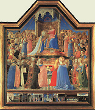
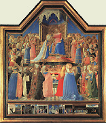

|  |
|---|
Textum Parmae 1864 editum
et automato translatum a Roberto Busa SJ in taenias magneticas
denuo recognovit Enrique Alarcón atque instruxit


|  |
|---|


[88852] Guillelmus Peraldus, De eruditione principum, lib. 6 pr. In praecedenti libro ostensum est quomodo princeps se habere debeat ad eos qui sunt ab ipso, scilicet ad filios et filias; in hoc sexto Lib. ostenditur quomodo habere se debeat ad eos qui sunt sub ipso, scilicet ad subditos.
[88853] Guillelmus Peraldus, De eruditione principum, lib. 6 cap. 1 Ad cognoscendum hoc, animo attendendum est ad doctrinam a Joanne Baptista militibus datam Luc. 2, dicente eis: neminem concutiatis, nec calumniam faciatis, et estote contenti stipendiis vestris. Debet princeps ad subditos habere mansuetudinem, veritatem, justitiae rectitudinem: unde summo principi dicitur Psalm. 44: regna, propter veritatem, et mansuetudinem et justitiam. Neminem concutiatis comminatione poenae eum terrendo: nec calumniam faciatis, culpam falsam imponendo ei: et estote contenti stipendiis vestris; quae erant statuta pro defensione reipublicae. Mansuetudo in principe vim irascibilem debet refraenare, ne inordinate ab eo exeat ignis irae. Ne princeps sit rhamnus ad impetum venti superbiae, ignem scilicet irae ex se producens: sed sit oliva, vitis, vel ficus. Veritas vim rationalem ejus dirigere debet, ne falsitatem circa subditos inveniat, vel inventam ab aliis admittat, ut bona eorum valeat extorquere: rectitudo vero justitiae vim concupiscibilem debet fraenare, ut cum Deo voluntatem unam habeat, et bona subditorum inordinate non appetat. Duo conjungunt hominem Deo: scilicet innocentia et rectitudo, juxta illud Psal. 24: innocentes et recti adhaeserunt mihi. Unitate voluntatis maxime adhaeret quis Deo, voluntatem unam habens cum eo. Unam cum Deo habemus, si irascibilis sit sine perversitate et concupiscibilis sine curvitate. Primum facit innocentia, secundum rectitudo. Innocentia adversatur malignitati, quae est appetitus alieni mali; rectitudo curvitati, quae est appetitus inordinatus transitorii boni. Hae duae gratiae reddunt hominem conformem Deo, et sic faciunt eum ipsi adhaerere. Psal. 24: rectus dominus Deus noster, et non est iniquitas in eo.
[88854] Guillelmus Peraldus, De eruditione principum, lib. 6 cap. 2 Magnitudinem malitiae impiorum principum in subditos suos multum ostendit spiritus sanctus in Scriptura sacra, dicens eos excoriare pauperes, atterere, commolire, pascere, comedere, devorare Mich. 3, habetur de primo: odio habetis bonum et diligitis malum, qui violenter tollitis pelles eorum desuper eos, et carnem eorum desuper ossibus eorum. De secundo et tertio Isa. 3: rapina pauperis in domo vestra. Quare atteritis populum meum, et facies pauperum commolitis? De quarto Eccles. 13: venatio leonis est onager in eremo, sic pascua divitum sunt pauperes. De quinto Prov. 30: generatio quae pro dentibus gladios habet, et commandit molaribus suis ut comedat inopes de terra, et pauperes ex hominibus. De sexto Ezech. 19: factus est leo, et didicit praedam capere, et homines devorare. Sed qualiter spiritus sanctus, qui hoc dicentibus inspiravit, ea intellexit? Respondeo. Raptores hoc pauperibus dicuntur facere quando ea faciunt rebus quae vitae eorum sunt necessariae. Cum raptor excoriat unum bovem, quem habet pauper homo, tale est pauperi ac si eum excoriaret: unde David 2 Reg. 12, cum proposuisset ei Nathan parabolam de divite habente oves et boves plurimos valde, qui abstulerat pauperi homini unicam ovem quam nutrierat ut filiam, et valde caram habebat, parcens suis, et parans ex ea convivium cuidam peregrino qui ad illum divitem venerat, respondit raptorem illum esse morte dignum, quasi homicidium commisisset: vivit, inquit, dominus, quoniam filius mortis est vir qui hoc fecit. Secundum hunc modum raptor molit pauperem cum frumentum pauperi necessarium molit. Aliter raptor pauperem excoriat, cum illa ei aufert, quae per amorem ita adhaerent pauperis cordi, sicut pellis adhaeret corpori, immo plus adhaerere videntur. Cum enim pauper ad mortem infirmatur, potius permittit animam separari a corpore, quam id quod habet det medicis ut sanetur. Ex hac adhaesione potest patere qualis sit dolor pauperum in illorum bonorum ablatione. Carnem et sanguinem auferunt raptores pauperibus, cum auferunt eis illa quae ipsi acquisierunt labore et sudore, et proprii corporis consumptione, quae etiam proprio corpori subtraxerunt, ut in carnem converterentur et sanguinem. Plus raptor facit pauperi quam si eum excoriaret: tunc enim suam pellem ei auferret, sed nunc pauperi aufert quod non suum est, sed quod ei accommodatum est ab usurariis, et quod jam comedit et bibit: expendit enim pauper multoties frumentum et vinum antequam illa colligat. Pauper a raptore commolitur, quia inter spem evasionis et metum depraedationis quasi inter duas molas affligitur. Item facies pauperum commolitur: ad tantam enim maciem faciunt eos devenire prae nimia paupertate, quod videntur genae eorum depressae fuisse inter duas molas. Ad ostensionem magnae malitiae impiorum principum spiritus sanctus diversis bestiis crudelibus eos comparat, ut leoni et urso. Prov. 28: leo rugiens et ursus esuriens princeps impius super populum pauperem. Lupo etiam comparatur princeps impius. Boetius in Lib. Consol. dicit de tali: avaritia fervet, alienarum opum violentum ereptorem, lupi similem dixeris. Malitiae magnitudinem quae in talibus est, ostendit Salomon Prov. 30, dicens: generatio quae pro dentibus gladios habet, et commandit molaribus suis et cetera. Velut dentes praecisivi sunt taxatores emendarum: quasi molares sunt mali collaterales: quasi ungues sunt praepositi. Dentes sunt, quia pauperes comedunt et devorant: gladii vero sunt, quia eos occidunt, dum vitam eorum eis auferunt, juxta illud Eccl. 34: qui aufert in sudore panem, quasi qui occidit proximum suum.
[88855] Guillelmus Peraldus, De eruditione principum, lib. 6 cap. 3 Circa principes qui in subditos suos sunt crudeles, specialiter attendenda est impietas injustarum talliarum. Et primo ostendetur circa hoc magnitudo culpae. Secundo magnitudo poenae. Tertio quam miserabilis sit status aliquorum principum, qui dicunt se a talibus talliis non posse cessare, cum tamen sciant quod facere eas ipsis sit damnabile. Ad culpae magnitudinem quatuor pertinent: scilicet infidelitas, Dei ingratitudo, contemptus Dei, et contemptus Angelorum ejus. Cum eamdem fidem debeat dominus subditis quam subditi ei, et dominus fidem velit sibi servari a subditis, magna infidelitas est cum ipse eis fidem non servat. Si subditus caperet dominum suum, vel alio modo malum ei faceret, proditor esset: sic dominus proditor est, si subditum capit nisi ille culpam commiserit quae hoc requirat. Nec minus indecens est si dominus absque culpa subditi eum capit, quam si subditus dominum caperet. Dicunt aliqui milites et aliqui principes: si aliquis mihi subditus non esset, et ei facerem malum, tunc bene scio quod peccarem; sed si subdito malo meo malum facio, non credo peccare, vel tantum peccare. Quibus potest dici, quod secundum hoc dominatio eorum diabolica est. Diabolus enim talis dominus est, quod sibi subditis loco retributionis afflictionem reddit; et illis qui melius ei serviunt, plura mala facit. Praeterea quis sanae mentis dubitet minus licitum hostem esse in suos quam in extraneos? Quis nesciat causam proditionis esse cum amicis inimicitias exercere? Subditi, secundum verbum sapientis, sunt humiles amici, cum constet quod princeps vel miles fidem debeat pauperi homini antequam faceret ei homagium tamquam fratri suo Christiano, nec pauper cum a fide illa absolveret, cum ei homagium fecit, sed ex homagio recepto magis est ei obligatus; sic quomodo a crimine proditionis immunis est cum subdito malum facit, nisi ei prius significet quod non vult ei fidem illam servare, et quod non vult eum de cetero tamquam subditum, sed tamquam hostem habere?
[88856] Guillelmus Peraldus, De eruditione principum, lib. 6 cap. 4 De fidelitate domini ad subditum, et subditi ad dominum sic legitur in Decr. 22 causa, qu. 5: qui domino suo fidelitatem jurat, ista sex in memoria semper debet habere: incolume, tutum, honestum, utile, facile, possibile. Incolume videlicet ne sit in damnum domino de corpore suo. Tutum, ne sit ei in damnum de secreto suo vel de munitionibus suis per quas tutus esse potest: honestum, ne sit ei in damnum de sua justitia, vel de aliis causis quae ad honestatem pertinere videntur. Cavere debet ne cum ejus uxore adulteretur, vel cum nepte vel cum filia ejus fornicetur. Utile, ne sit ei in damnum de suis possessionibus: facile vel possibile, ne id bonum quod dominus suus leviter facere poterat, faciat ei difficile: vel ne id quod possibile erat, reddat ei impossibile, ut fidelis hoc caveat justum est. Sed quia non sufficit abstinere a malo, nisi hoc faciat quod bonum est; restat ut in sex praedictis domino suo fidelis consilium et auxilium praestet, si beneficiis dignus videri vult, et salvus esse de fidelitate quam juravit. Dominus quoque fideli suo his omnibus vicem reddere debet: quod si non fecerit, merito censebitur maleficus: sicut ille qui in domini praevaricatione vel faciendo vel consentiendo deprehensus fuerit, perfidus et perjurus est.
[88857] Guillelmus Peraldus, De eruditione principum, lib. 6 cap. 5 Peccatum ingratitudinis divinae ibi est. Deus enim honoravit eum aliis hominibus ipsum praeficiendo: ipse vero ex hoc inhonorat Deum in pauperibus eos opprimendo. In hoc similis est militibus qui dominus crucifixerunt, qui arundine de manu domini accepta caput ejus percutiebant. In arundine signatur terrena potestas, quam milites a Deo accipiunt, et postea ex ea in pauperibus eum percutiunt. Contemptus etiam Dei et Angelorum est ibi. Licet enim Deus tradiderit pauperes custodientes potentibus hujus saeculi, tamen ipse noluit eos esse absque custodibus caelestibus: immo unusquisque homo habet Angelum bonum sibi ad custodiam deputatum, quem ille contemnit qui pauperem hominem opprimit; et cum Angelo Deum contemnit, cujus ministerium non reveretur.
[88858] Guillelmus Peraldus, De eruditione principum, lib. 6 cap. 6 Prima poena principum qui in subditos suos crudeles sunt, est paupertas. Dominus enim videns eos iniquos in paucis bonis temporalibus eis commissis, non vult eis amplius dare; sciens quod qui in modico iniquus est, et in majori iniquus est, ut habetur Luc. 16: unde frequenter videmus milites qui tallias faciunt, pauperes; illos autem qui non faciunt, divites. Secunda est principatus diminutio vel amissio: subditi enim eorum fugiunt eos. Justo enim judicio fit, ut qui plus volebant habere quam deberent, non habeant etiam quod deberent habere: unde legitur in Lib. Reg. 12, quod Roboam filius Salomonis volens aggravare jugum filiorum Israel, dominium decem tribuum amisit. Tertia est a majori et fortiori oppressio. Vult enim Deus opprimi ab aliquo potentiori, sicut ipsi minus potentes opprimunt, juxta illud Psal. 57: Deus conteret dentes eorum in ore ipsorum: molas leonum confringet dominus. Per dentes et molas leonum intelligitur potestas devorandi pauperes et conterendi, quam interdum dominus eis aufert. Quarta est cruciatus magni in futuro: durum enim judicium apud Deum merentur. Ea enim mensura qua mensi fuerint hi quibus praesunt, remetietur eis ab eo qui praeest illis. Unde non credant Deum misericorditer acturum cum eis, cum ipsi non agant misericorditer, immo nec juste, cum subditis suis. Ad haec pertinet quod legitur Sap. 6: cito apparebit vobis regibus, quoniam judicium durissimum his qui praesunt, fiet. Exiguo enim concedetur misericordia, potentes potenter tormenta patientur. Non enim subtrahet personam cujusquam dominus, qui est omnium dominator, nec verebitur magnitudinem cujusquam. Pusillum et magnum ipse facit, et aequaliter illi cura est de omnibus: fortioribus autem fortior instat cruciatio. Quinta est caelestis regni amissio: sic enim dominus dicturus est illi qui fidelis est in temporalibus istis: euge serve bone et fidelis, quia in pauca fuisti fidelis, supra multa te constituam: et ita dicturus est illi qui se habuit infideliter: quia super pauca fuisti infidelis, supra nulla te constituam, intra in carcerem domini tui, qui paratus est Diabolo et Angelis ejus. Mira insania potentum hujus mundi, qui cum receperint aliquid terrenum a Deo, non curant de eo ac si nihil aliud haberet quod dare posset: et qui plus tenent de terra ab eo, minus curant de eo; et quia plus habent de terra quam alii, de caelo non curant. Status talium valde miserabilis est Deo et hominibus exosus, multum est ignominiosus. Dicunt se a talibus talliis non posse cessare, cum tamen eas facere sciant esse damnabile. Sicut lupus odio habetur ab hominibus et a ceteris animalibus, quia non vivit nisi ex eis quae rapit; sic tales odio habentur. In hoc tamen est differentia: quia lupi non exercent rapinam contra lupos, sed contra animalia alterius speciei; sed raptores homines exercent rapinam contra homines qui sunt ejusdem speciei cum eis. Ignominiosus est status talium: sicut gloriosum est dare, sic vile est quaerere: et tanto vilius est genus quaerendi, quanto vilior est persona a qua quaeritur, et nobilior est persona quae quaerit. Vilitas ista quae est in quaerendo, multum debet reprimere principes et milites, ne ultra vires expenderent: plus enim est ignominiae in quaerendo, si ipsi scirent hoc intelligere, quam sit honoris expendendo prodige. Tales sunt in tali statu in quali esset aliquis positus in carcere, cui non apponerentur nisi toxicata, et sic cogitaret: non possum vivere nisi comedam; et si comedo, comedo mortem meam. In magno dolore animi debent esse tales, et totam vitam suam contemnere. Ridiculosa est excusatio talium, ut patet ex verbis Augustini in Lib. de verbis domini dicentis: sunt nonnulli qui aut militiae cingulo detinentur, aut in actu sunt publico constituti. Cum peccant graviter, assolent se prima voce a peccatis suis excusare quod militant, et ne bene aliquando faciant, occupatos se malis actibus conqueruntur. Indubitanter inexcusabilis est qui sciens et volens malam viam tenet, cum agnoscat viam bonam, et possit incedere per eam.
[88859] Guillelmus Peraldus, De eruditione principum, lib. 6 cap. 7 Princeps qui locum Dei tenet, et eum imitari debet, magis appetere debet a subditis amari quam timeri: frequenter cogitare debet quod in illo extremo et districtissimo judicio oportebit de subditis Deo rationem reddi. Bona sua, si necesse fuerit, debet eis liberaliter communicare. Multum decet principem liberalitas. Haec est leonina nobilitas, juxta verbum Aristotelis in fin. Prior. De labore quem habet pro subditis pauperibus, et de beneficiis eis impensis debet retributionem a Deo, non ab homine, expectare. Debet eos a malis protegere, nec sustinere debet majores minores opprimere. Ministros pauperibus subditis misericordes debet habere. Princeps subditos suos majores opprimentes minores, fortiter debet reprimere, sicut ostendit Valerius maximus in Lib. de disciplina militari, dicens: aspero castigationis genere militaris disciplina indiget: quia vires armis constant: quae ubi a recto tenore desciverint, oppressurae sunt nisi opprimantur. Cum Seraphim Deo familiarissimi et propinquissimi sint, qui habent nomen ab excellentia dilectionis, et post illos Cherubini, qui nomen habent ab excellentia cognitionis, terreni principes exemplo summi principis habere debent familiarissimos et propinquissimos homines Dei amore incensos, et post illos, homines scientia praecellentes. Princeps qui in hoc mundo vices Dei habet agere, totis viribus ad hoc conari debet, ut principem hujus mundi, scilicet Diabolum, qui hujus dominium usurpat, possit ejicere. Item cum sciat principes districtissime seu durissime judicandos, judicium divinum ante oculos mentis quasi continue debet habere, et judicio proprio illud praevenire. Scriptum enim est 1 Cor. 6: si nosmetipsos dijudicaremus, non utique judicaremur. Bernardus: bonum judicium quod me illi districto subducit judicio et abscondit. Volo vultui irae judicatus apparere, non judicandus. Idem: judicemus interim, fratres, et terribilem illam expectationem studeamus praesenti declinare judicio. Idem: qui judicari dissimulant judicio quo princeps mundi hujus ejicitur foras, judicem expectent, vel magis timeant, a quo cum ipso principe suo foras ejicientur et ipsi. Debet princeps sic se habere, ut in eo possint alii exemplum bonum accipere. Isidorus: qui recte utitur regni potestate, formam justitiae factis magis quam verbis instituit. Ille nulla prosperitate erigitur, nulla adversitate turbatur, non innititur propriis viribus, nec a domino recedit cor ejus; fastigio humili praesidet animo, non eum delectat iniquitas, non inflammat cupiditas: sine defraudatione alicujus pauperes divites facit, et quod justa potestate a populis extorquere poterat, saepe miserendi clementia donat. Multum nocet exemplum principis mali. Bernardus in epistola: principis error multos involvit, et tantis obest, quantis praeest ipse. Exemplum vero bonum principis et Deo multum placet, et hominibus multum prodest. Bernardus in Epist.: minime quidem Deus est acceptor personarum: nescio tamen quo pacto virtus plus in nobili placet: an forte quia plus caret? Siquidem ignobilis cum caret gloria, non facile liquet utrum careat quia nolit, aut quia non possit habere. Laudo factam de necessitate virtutem; sed plus illam quam elegit libertas, non induxit necessitas. Princeps de bonis quae habet, Deo gratias agere debet. Augustinus: ex his quae habes, age gratias tamquam fonti bonitatis unde habes, atque in omnibus bonis actibus tuis da illi claritatem. Multum debet princeps cavere ne potestatem quam a Deo habet, indignis communicet, qui ea abutantur: mala enim ab eis facta ei imputarentur: sicut patet ex verbis domini, Joan. 19, cum dixisset Pilatus, potestatem habeo crucifigere te, et potestatem dimittere te, respondit ei dominus: non haberes potestatem adversus me ullam, nisi tibi esset datum desuper. Propterea qui tradidit me tibi, majus peccatum habet. Laudabiles mores debet habere princeps: unde Augustinus loquens principi vel militi: ornet mores tuos pudicitia conjugalis, ornet sobrietas et frugalitas. Valde enim turpe est ut quem non vincit homo, vincat libido, et obruatur vino qui non vincitur ferro.
[88860] Guillelmus Peraldus, De eruditione principum, lib. 6 cap. 8 Necessarium est principi a superbia cavere, si vult ab aliis vitiis abstinere. Vitium superbiae quasi rex est vitiorum; coronam habet, sed maledictam, juxta illud Isa. 28: vae coronae superbiae. Quando hoc vitium venit ad aliquem, non venit solum, sed adducit magnam societatem ad modum regis, juxta illud Eccle. 20: initium omnis peccati superbia; qui tenet eam, adimplebitur maledictis idest vitiis. Super quem locum sic habetur: de superbia nascuntur haereses, schismata, detractiones, invidia, verbositas, jactantia, contentiones, et hujusmodi. Hoc vitium ad modum regis magnas expensas requirit, ita quod superbis hominibus non sufficiant episcopatus, ducatus vel regna: unde dicitur Eccle. 21: domus quae nimis locuples est, annullabitur superbia. Et cum superbia majores expensas requirat quam cetera vitia, tamen minus utilitatis habere videtur. Ex vitiis enim pertinentibus ad concupiscentiam oculorum, videtur consequi aliqua utilitas, saltem corporalis; superbia vero animae nocet, corpori vero non videtur prodesse: unde Sap. 6, dicunt damnati qui sunt in Inferno: quid nobis profuit superbia? Et divitiarum jactantia quid contulit nobis? Vitium superbiae ex quo habet dominum in aliquo, non de facile amittit: sicut reges non de facile amittunt castrum quod semel possident, quia potenter illud defendunt. Multum timendum est vitium superbiae. Infirmitas enim est quae vix sanatur, juxta illud Eccle. 3: synagogae superborum non erit sanitas. Si in tanto timore sunt infirmi cum eis dicitur quod infirmitatem habent incurabilem, in quanto timore debent esse qui laborant vitio superbiae, cum spiritus sanctus ostendat eis infirmitatem insanabilem habere? Vitium superbiae caput est antiqui serpentis, cujus capitis contritioni maxime esset insistendum: unde Genes. 3, dictum est serpenti de muliere quae tenet figuram Ecclesiae: ipsa conteret caput tuum. Serpens modica percussione capitis occiditur: si capiti parcatur, frustra cetera membra ipsius percutiuntur; amputata enim cauda nihilominus vivit; sic frustra alia vitia a se amputare nititur, qui superbiam non relinquit. Hieronymus: lubricus est antiquus serpens; et nisi capite teneatur, totus statim illabitur. Eccle. 21: quasi a facie colubri fuge peccata. Sicut in colubro caput specialiter fugimus, sic superbia fugienda est quae caput est vitiorum. Eccle. 25: non est caput nequius super caput colubri. Contrito hoc capite, facile cetera vitia destruuntur. Chrysostomus: tolle vitium hoc, ut non velint homines hominibus parere; et sine labore omnia alia vitia resecantur. Vitium superbiae primogenitus Pharaonis infernalis, in cujus morte filii Israel liberantur. Golias in capite percussus a Davide cecidit in faciem suam, et sic David praevaluit adversus eum; sic qui superbiam, quae caput Diaboli est, in se viriliter percusserit, adversus Diabolum praevalebit aliis vitiis in fugam conversis. Superbia in campo remanet non cessans ab impugnatione hominis, dum homo vivit, et juxta illud, cum bene pugnaris, cum cuncta subacta putaris, quae post infestat, vincenda superbia restat. Superbia altitudo est quasi quaedam turris alia vitia defendens, et ea expugnari non permittens: ut patet in usurariis et raptoribus, qui ab usuris et rapinis cessare nolunt, quia videtur eis quod si ab eis cessarent, inter vicinos suos honorifice vivere non possent. Si vult princeps a malis abstinere, necesse habet excessum refraenare, qui superbiam sequi solet, et in se, et in uxore et filiis et filiabus, in familia et in ministris, in ornatu corporis, in equis, in multitudine familiae, in conviviis, aut in vasis aureis et argenteis, et aedificiis, et multis aliis. Laus domini est ubi munda est possessio, et innocens familiae disciplina. Multum cavendum est principi ne subditorum negligendo correptionem, habeat crudelem miserationem. Augustinus in epistola: modestus est medicus furenti phraenetico, et pater indisciplinato filio; ille ligando, ille caedendo, sed ambo diligendo. Si autem illos negligant, et perire permittant, ista potius falsa mansuetudo crudelis est. Bernardus super illud Psalm. 90, qui habitat: quantum ergo compatiar, et si quid solatii possem impendere, quam libenter id facerem, novit ille quem nil latet: verumtamen si de poenarum diminutione solatium praebere voluero, crudelis et immisericors ero. Quantum enim subtraham de poena, tantum de corona furabor: tantum defraudabo fructus, quantum de semente subtraxero. Modica subtractio seminis non modicum est messis detrimentum.